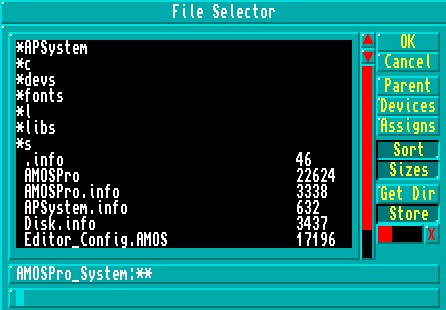

LMB return a file's full path string [F10]
RMB SYSTEM [Shift]+[F10]
The Direct Mode window can be moved around the screen by dragging it with the left mouse button, or by pressing the [Ctrl] + [Up Arrow] and [Ctrl] + [Down Arrow] keys. The size of the Direct Mode window is changed by dragging its bottom border, or by using the [Shift]+[Up Arrow] and [Shift]+[Down Arrow] keys.
You are reminded that the [Up Arrow] and [Down Arrow] keys are also used to recall up to twenty previous lines entered in Direct Mode. Simply hit the [Return] key to execute any recalled line. The number of lines that can be recalled may be changed from twenty to anything in the range of zero to 128, and this process is explained in Chapter 13.1.
To end this examination of AMOS Professional Direct Mode, your attention is drawn to the prompt line at the lower left of the Direct Mode Window. The AMOS Pro> prompt is highlighted, and marks the position at which your typed instructions will appear. The prompt itself awaits your instructions, which will be executed as soon as you press the [Return] key.
The File Selector
Please summon up the File Selector now. Simply go to Direct Mode and press [F10] on your
keyboard.
Programs are stored on discs as "files", and each is given an individual file name. The File Selector is a means to gain access to individual files, and Chapter 10.2 is devoted to all the aspects of files stored on disc.
The AMOS Professional File Selector is faster than its AMOS and Easy AMOS predecessors, it offers more features and it happens to be a lot better looking! The physical size and positioning of the File Selector can be changed to your own preferences and this is explained in Chapter 13.1. When the AMOS Professional File Selector is summoned, it appears like this:
